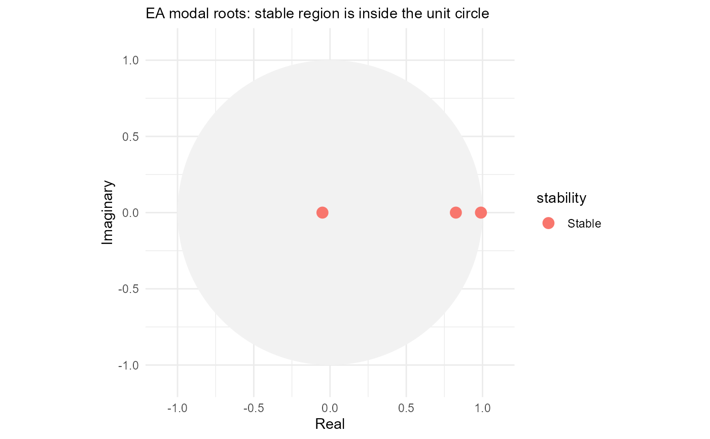

Convert an AR parameter set into modal roots, reciprocal lag roots, decay times, oscillation periods and stability classifications.
Value
A characteristic-root result. Use root_table() to extract the
diagnostic table and plot_ar() to display the roots.
Examples
root_information <- roots(
default_ar_parameters(),
time_step_minutes = 15
)
root_table(root_information)
#> root_id root_real root_imaginary root_modulus lag_root_real
#> <int> <num> <num> <num> <num>
#> 1: 3 0.98961490 1.100114e-24 0.98961490 1.010494
#> 2: 2 0.82517187 -1.306909e-24 0.82517187 1.211869
#> 3: 1 -0.04978678 2.067952e-25 0.04978678 -20.085655
#> lag_root_imaginary lag_root_modulus raw_decay_time_steps decay_time_steps
#> <num> <num> <num> <num>
#> 1: -1.123324e-24 1.010494 95.7909755 95.7909755
#> 2: 1.919360e-24 1.211869 5.2038996 5.2038996
#> 3: -8.342810e-23 20.085655 0.3333327 0.3333327
#> effective_decay_time_steps decay_time_hours effective_decay_time_hours
#> <num> <num> <num>
#> 1: 95.7909755 23.94774387 23.9477439
#> 2: 5.2038996 1.30097489 1.3009749
#> 3: 0.2338708 0.08333317 0.0584677
#> oscillation_period_steps oscillation_period_hours is_growing is_persistent
#> <num> <num> <lgcl> <lgcl>
#> 1: Inf Inf FALSE FALSE
#> 2: Inf Inf FALSE FALSE
#> 3: 2 0.5 FALSE FALSE
#> is_oscillating modal_stability lag_stability display_order
#> <lgcl> <fctr> <fctr> <int>
#> 1: FALSE Stable Stable 1
#> 2: FALSE Stable Stable 2
#> 3: TRUE Stable Stable 3
plot_ar(root_information, root_definition = "modal")
